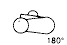
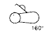
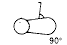

This maneuver assesses maturation of passive flexor tone about the knee
joint by testing for resistance to extension of the lower extremity. With
the infant lying supine, and with diaper re-moved, the thigh is placed
gently on the infant's abdomen with the knee fully flexed. After the infant
has relaxed into this position, the examiner gently grasps the foot at the
sides with one hand while supporting the side of the thigh with the other.
Care is taken not to exert pressure on the hamstrings, as this may interfere
with their function. The leg is extended until a definite resistance to
extension is appreciated. In some infants, hamstring contraction may be
visualized during this maneuver. At this point the angle formed at the knee
by the upper and lower leg is measured.
Note: a) It is important that the examiner wait until the infant stops
kicking actively before extending the leg. b) The prenatal frank breech
position will interfere with this maneuver for the first 24 to 48 hours of
age due to prolonged intrauterine flexor fatigue. The test should be
repeated once recovery has occurred; alternately, a score similar to those
obtained for other items in the exam may be assigned.
| SIGN | NEURO-MUSCULAR MATURITY SCORE | SIGN SCORE | ||||||
| -1 | 0 | 1 | 2 | 3 | 4 | 5 | ||
| Popliteal Angle |  |  |
 |
 |
 |
 |
 |
|